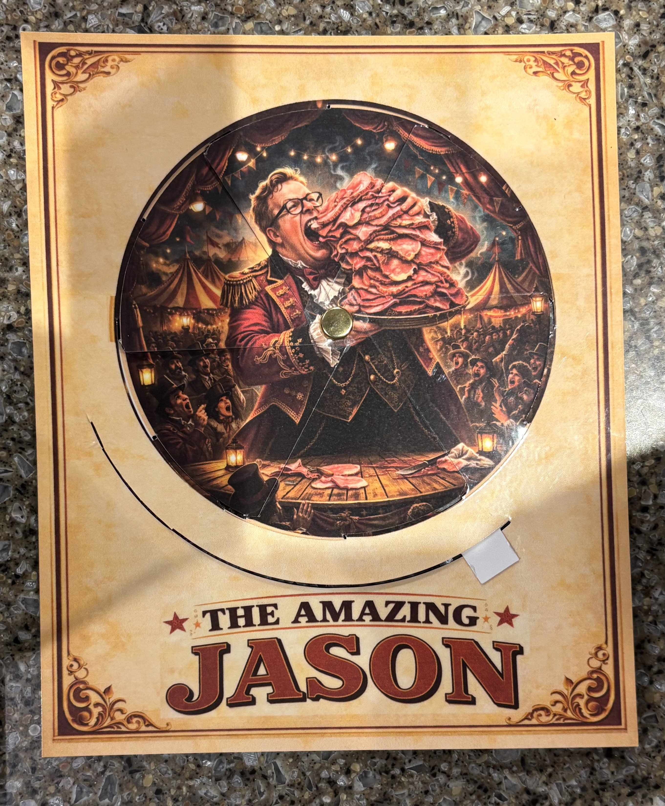
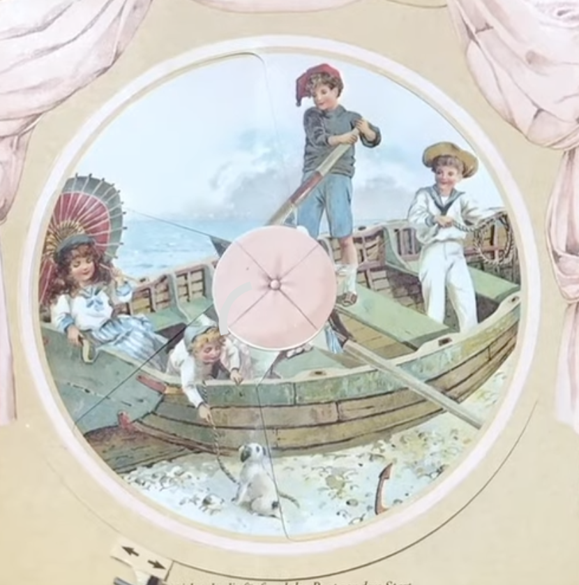
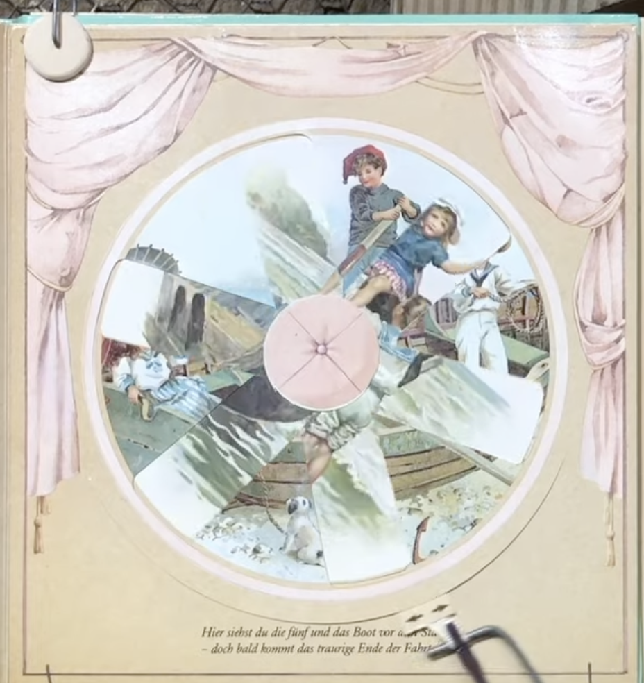
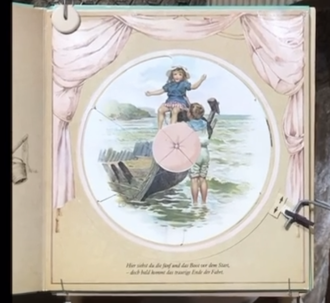
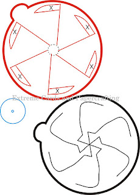
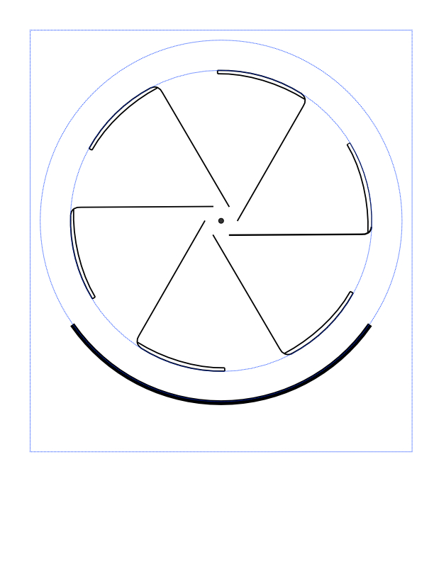
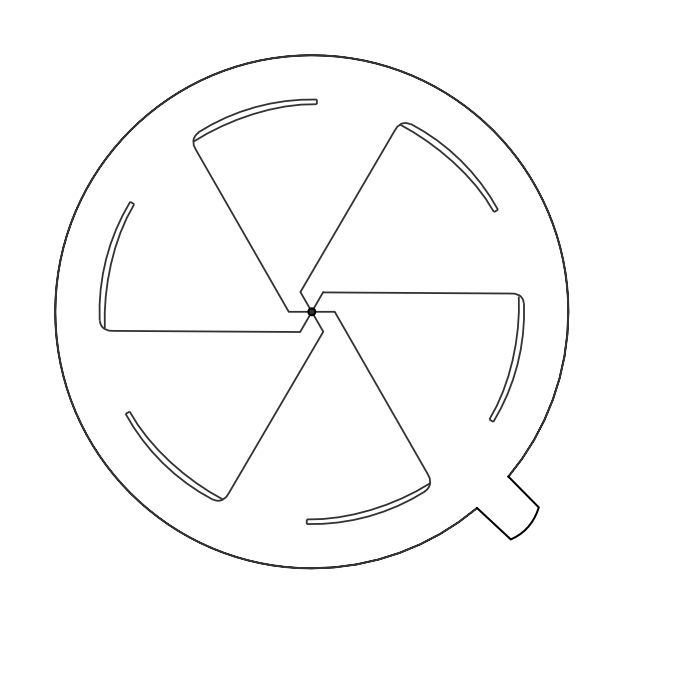

The Result
Spin the wheel and the image changes completely. Same frame, same cutout windows — two entirely different pictures depending on where the disc rests.


The Inspiration



It started with a YouTube video showing pages from a Victorian picture book — the disc spins and the illustration changes completely. I tracked it down: the book was made by Ernest Nister around 1895.
How It Works
The wheel is split into six pie-shaped sections, each offset between front and back. As you rotate, the back sections slide under the front frame — one set of image windows closes as the other opens.
Both pieces share the same spoke pattern, but the back is a mirror image, rotated so the spokes interleave instead of overlapping. At each resting position you see one complete image; mid-rotation, both are visible in fragments — the spokes hide the seams between them. The 110° slider cut on the front constrains the rotation so the wheel stops at each complete image.
Working Out the Geometry

I knew roughly what the mechanism needed to do, but translating that into precise cut lines meant working out every angle from scratch. The tricky part was the center: the spokes on each piece have to interleave exactly, so the spoke widths, gaps, and offsets all had to be calculated — not eyeballed. Several attempts on paper before I touched any software.
Final Measurements
- Image ring: 15 cm diameter — six 35–36° cutout windows
- Inner circle (spoke anchor): 1.6 cm diameter
- Center pin dot: 0.25 cm
- Front frame: 19 × 21 cm rectangle
- Slider arc: 110° cut along an 18 cm circle
- Back outer ring: 18 cm diameter
Partway through, I got stuck on what the center structure should actually look like. Extreme Cards and Papercrafting had a rough template that gave me enough to understand the shape — even though the measurements weren't usable and I had to derive everything myself.

I started in Inkscape and finished in Affinity Designer, which I found much easier to learn. Honestly, working out the geometry was one of the most satisfying parts of the whole project.
The Templates
The SVG files below are the cut templates I designed. The front piece has the image ring cutout, the spoke pattern, and the frame outline. The back piece has the full rotating disc with its own spoke pattern. Blue dashed lines are guides (image and slider circles); black lines are cuts.


To use the templates: add your artwork as a layer in the SVG file before printing, then cut along the black lines. Your art for the rotating image should be a circle with a 15 cm diameter — use the blue dashed circle on the front piece as a guide. On the back piece, anything beyond the spokes won't be visible, so don't worry about art outside that area. The blue rectangle on the front piece marks the minimum frame size, ensuring the front fully covers the back.
The design can be scaled up or down as long as both pieces are scaled proportionally together.
SVG files — open in Inkscape, Affinity Designer, or any vector editor. Add your art as a layer, then print at actual size.
{kind=link}
{kind=link}
Materials & Assembly
I used 100lb card stock and laminated both pieces. Lamination isn't strictly necessary, but it adds a lot of stability and durability — and makes the wheel slide much more smoothly. I cut the pieces with a Cricut, but a careful hand and an X-Acto knife would work just as well.
To assemble:
- Place the back piece behind the front piece and slide its outer tab into the arc slot on the front, as far left as it will go (viewed from the front).
- At the center, tuck each of the six tabs from the back piece under the nearest spoke of the front piece.
- On the back of the front piece, place a small piece of tape over the star-shaped cluster of tabs to hold them in place. Make sure the tape only touches the tabs — not the front piece itself — so the wheel can still rotate freely.
- Insert a brad through the center hole to join both pieces together.